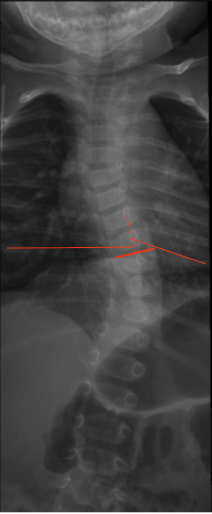

Adapted from: Desai S, Infantile vertebral scoliosis. Case study, Radiopaedia.org (Accessed on 29 Dec 2025) https://doi.org/10.53347/rID-63310
1) Description of Measurement
Rib–Vertebra Angle Difference (RVAD) is a coronal plane radiographic measurement used to assess curve progression risk in infantile idiopathic scoliosis. It quantifies the asymmetry of rib orientation relative to the apical vertebra on the convex and concave sides of the curve.
RVAD reflects underlying rotational deformity and growth imbalance and is a strong predictor of whether a curve will resolve spontaneously or progress, guiding early treatment decisions.
2) Instructions to Measure
3) Normal vs. Pathologic Ranges
Key points:
4) Important References
Mehta MH. The rib-vertebra angle in the early diagnosis between resolving and progressive infantile scoliosis. J Bone Joint Surg Br. 1972 May;54(2):230-43.
Brink RC, Schlösser TPC, van Stralen M, et al. What Is the Actual 3D Representation of the Rib Vertebra Angle Difference (Mehta Angle)? Spine (Phila Pa 1976). 2018 Jan 15;43(2):E92-E97. doi: 10.1097/BRS.0000000000002225.
Lincoln TL. Infantile idiopathic scoliosis. Am J Orthop (Belle Mead NJ). 2007 Nov;36(11):586-90.
5) Other info....
RVAD is specific to infantile idiopathic scoliosis (typically <3 years old).
Most predictive when measured:
Should be interpreted alongside:
Progressive curves often require early intervention (e.g., serial casting) to prevent severe deformity.
Accurate RVAD measurement requires strict true AP positioning; rotational artifacts can falsely elevate values.